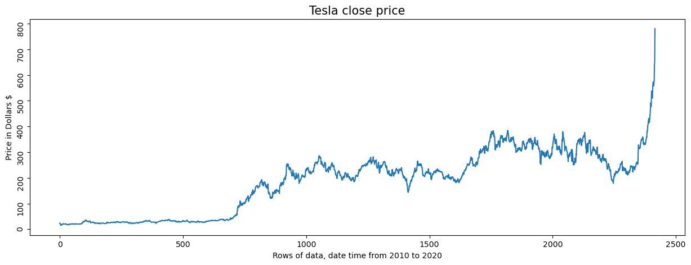
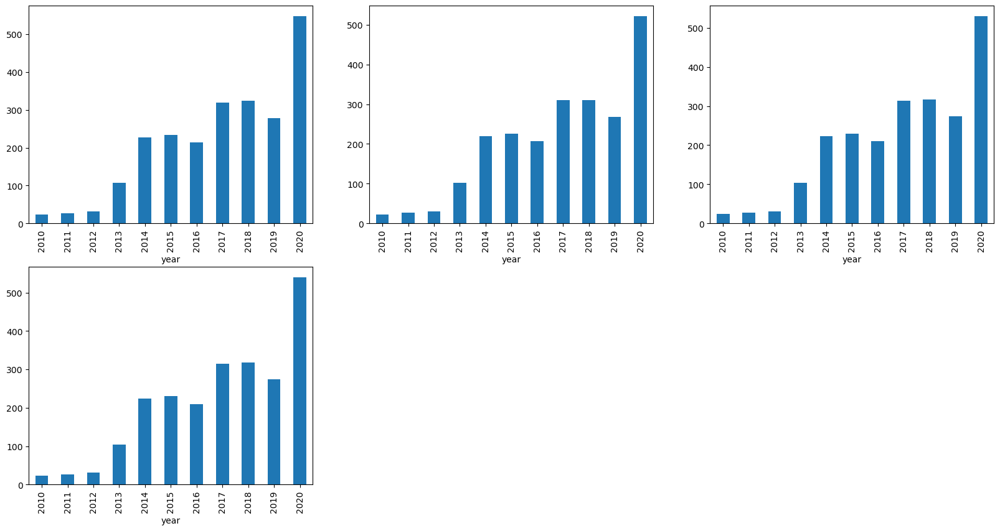
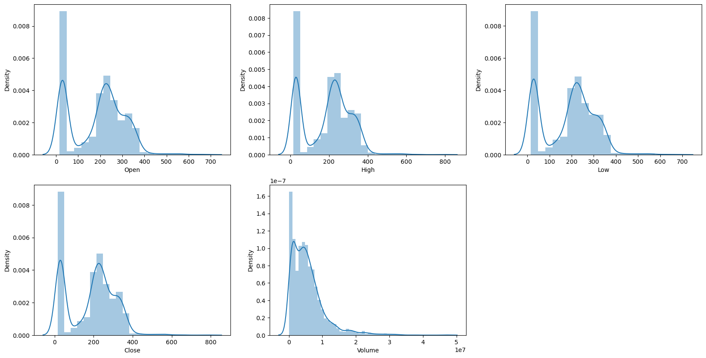
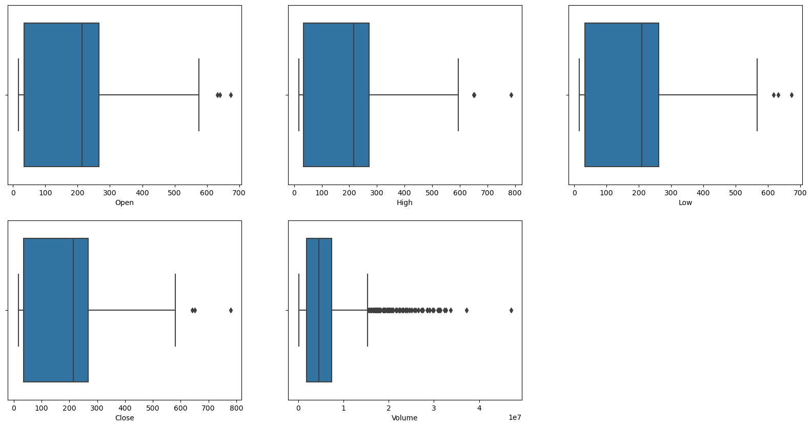
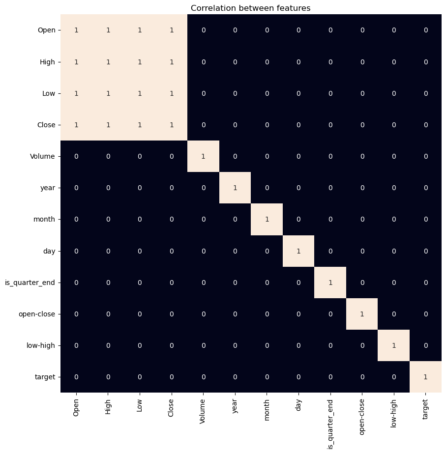
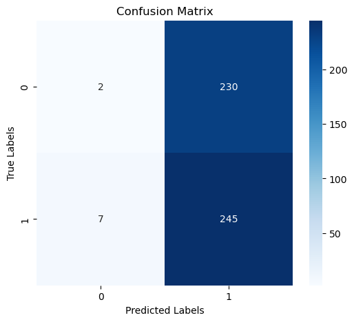
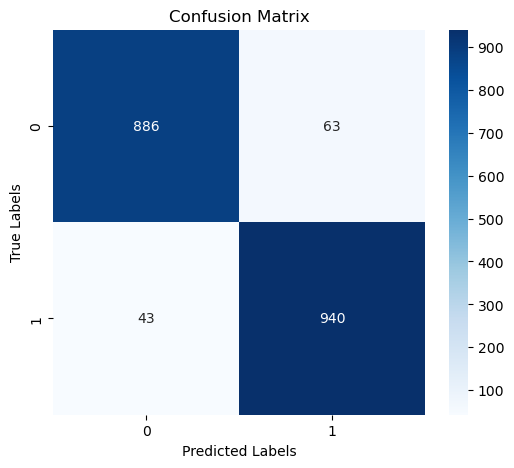
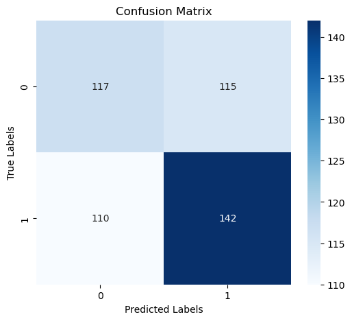

Pipeline Dependencies
Python libraries for data manipulation, machine learning & visualisation.
System Architecture
From raw stock data to directional prediction — end‑to‑end pipeline.
Core Classification Models
Formal definitions of the six algorithms used in the competition.
Feature Space Configuration
Core features after engineering: 4 input dimensions + target.
| Feature | Category | Description |
|---|---|---|
open-close | Momentum | Difference between opening and closing price (daily volatility proxy). |
low-high | Volatility | Daily price range (low minus high, negative). |
is_quarter_end | Temporal | Binary flag indicating end of fiscal quarter (month % 3 == 0). |
Volume | Liquidity | Number of shares traded (log-scale distribution). |
target | Direction | 1 if next day’s Close > current Close, else 0. |
Model Training & Evaluation Pipeline
Full Python code including utils.py helper functions for metrics and confusion matrix display.
import numpy as np import pandas as pd import matplotlib.pyplot as plt import seaborn as sns from sklearn.model_selection import train_test_split from sklearn.linear_model import LogisticRegression from xgboost import XGBClassifier, XGBRFClassifier from sklearn.ensemble import RandomForestClassifier from sklearn.tree import DecisionTreeClassifier from sklearn.svm import SVC from sklearn.preprocessing import StandardScaler from sklearn.metrics import accuracy_score, f1_score, confusion_matrix, roc_auc_score # ---------- utils.py functions ---------- results = {} def model_metrics(y_true, y_pred): acc = accuracy_score(y_true, y_pred) roc = roc_auc_score(y_true, y_pred) f1_1 = f1_score(y_true, y_pred, pos_label=1) f1_0 = f1_score(y_true, y_pred, pos_label=0) cm = confusion_matrix(y_true, y_pred) return acc, roc, f1_1, f1_0, cm def model_description(model, x_train, y_train, x_test, y_test): model.fit(x_train, y_train) train_pred = model.predict(x_train) test_pred = model.predict(x_test) acc_tr, roc_tr, f1_1_tr, f1_0_tr, cm_tr = model_metrics(y_train, train_pred) acc_te, roc_te, f1_1_te, f1_0_te, cm_te = model_metrics(y_test, test_pred) results[model.__class__.__name__] = { "Train Accuracy": acc_tr, "Roc-Auc Train Accuracy": roc_tr, "Train F1 Class 1": f1_1_tr, "Train F1 Class 0": f1_0_tr, "Test Accuracy": acc_te, "Roc-Auc Test Accuracy": roc_te, "Test F1 Class 1": f1_1_te, "Test F1 Class 0": f1_0_te, "Confusion Matrix Train": cm_tr, "Confusion Matrix Test": cm_te } def display_results(): for name, m in results.items(): print(f"\n📌 Model: {name}") print(f"Train Accuracy: {m['Train Accuracy']:.4f}") print(f"Test Accuracy: {m['Test Accuracy']:.4f}") print(f"ROC-AUC Test: {m['Roc-Auc Test Accuracy']:.4f}") print(f"F1 Class 1 Test: {m['Test F1 Class 1']:.4f}") # ---------- main pipeline ---------- df = pd.read_csv('tesla_stock.csv') df['open-close'] = df['Open'] - df['Close'] df['low-high'] = df['Low'] - df['High'] df['target'] = np.where(df['Close'].shift(-1) > df['Close'], 1, 0) X = df[['open-close', 'low-high', 'is_quarter_end', 'Volume']] y = df['target'] X_scaled = StandardScaler().fit_transform(X) X_train, X_test, y_train, y_test = train_test_split(X_scaled, y, test_size=0.2, random_state=1) models = [ SVC(kernel='poly', probability=True), DecisionTreeClassifier(), LogisticRegression(), XGBClassifier(), XGBRFClassifier(), RandomForestClassifier() ] for model in models: model_description(model, X_train, y_train, X_test, y_test) display_results() # Confusion matrices can be plotted with sns.heatmap using stored values.
Exploratory Visual Diagnostics
Time series, distribution plots, correlation heatmap, confusion matrices, and feature distributions. Click any image to enlarge.








Performance Diagnostics & Engine Insights
Test set performance (20% holdout) for six classifiers.
Diagnostic Breakdown: XGBClassifier yields the highest test accuracy (53.5%) and ROC-AUC (0.534), but extreme overfitting (train accuracy 94.5%) indicates need for regularisation. Logistic Regression offers a more robust, generalisable baseline with stable train/test metrics (train acc 52.6%, test 52.3%). Decision Tree and Random Forest show near‑perfect training performance but near‑random test predictions (≈50%), confirming severe overfitting. SVC performs slightly better than random guessing. For production, ensemble pruning or feature reduction is recommended.
Project Synthesis & Roadmap
Empirical summary and next‑generation enhancements.
Empirical Breakdown: XGBoost outperforms other classifiers in test accuracy, yet linear models (Logistic Regression) show more consistent train‑test gaps. Feature engineering — especially `is_quarter_end` and `open-close` — captures meaningful market microstructure. The balanced target distribution ensures no baseline bias.
Future Directions: Incorporate technical indicators (RSI, MACD, moving averages), hyperparameter tuning via GridSearchCV, time‑series cross‑validation, and deep learning architectures (LSTM). Additionally, ensemble stacking of XGBoost and logistic regression could improve generalisation.